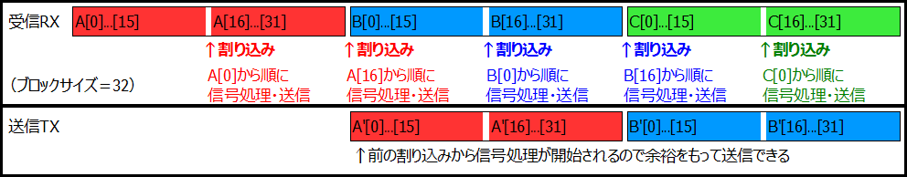

HAL_I2SEx_TransmitReceive_DMA使用時の割り込み修正
2019年03月24日 カテゴリー：STM32 エフェクター
Owm Pedal ソフトウェア編で書いていた通り、「HAL_I2SEx_TransmitReceive_DMA」使用時に「HAL_I2SEx_TxRxCpltCallback」が起こらないというバグがあります。STM32のコミュニティで質問されていましたがその後のバージョンでも修正されていないので、自力で修正することにします。
プロジェクトフォルダ内のファイルDrivers/STM32F4xx_HAL_Driver/Src/stm32f4xx_hal_i2s_ex.cを編集します。「I2SEx_TxRxDMACplt」関数がDMA転送完了時に呼び出されるようになっています。この関数を見ると、「if (hdma->Init.Mode == DMA_NORMAL)」以下のカッコ内に「/* Call user TxRx complete callback */」以下の記述が入っているため、DMAサーキュラーモードでは何も起きないことがわかります。なのでこの記述をカッコ外に移動すれば解決するはずです。（同フォルダ内にあるstm32f4xx_hal_i2s.cの「I2S_DMATxCplt」関数を見ると正しいコードがわかります。）
細かい修正をすると間違えそうなので、私は単純にHAL_I2SEx_TxRxCpltCallback関数を追加記載することにしました。
static void I2SEx_TxRxDMACplt(DMA_HandleTypeDef *hdma)
{
I2S_HandleTypeDef *hi2s = (I2S_HandleTypeDef *)((DMA_HandleTypeDef *)hdma)->Parent;
HAL_I2SEx_TxRxCpltCallback(hi2s); // ←追加！CubeMXでコード出力すると元に戻るので注意
/* if DMA is configured in DMA_NORMAL mode */
if (hdma->Init.Mode == DMA_NORMAL)
{
if (hi2s->hdmarx == hdma)
{
/* 中略 */
}
if (hi2s->hdmatx == hdma)
{
/* 中略 */
}
}
}
＜データ処理方法変更＞
1つのブロックにつき「HAL_I2SEx_TxRxHalfCpltCallback」と「HAL_I2SEx_TxRxCpltCallback」の2回割り込みが使えるようになったので、Owm Pedalの信号処理を下図のように変更しました。GitHubのmain.cファイルも変更しています。

最初の割り込みでグループA前半の信号処理と送信バッファへの代入を開始し、次の割り込みでグループA後半を処理開始します。処理後のグループA（A'）を送信するときには送信バッファへの代入が余裕をもって終わっていると考えられるので、安定した動作が見込めます。ただし、実質的にブロックサイズ半分で処理しているという点には注意が必要です。